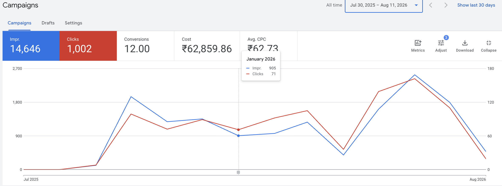
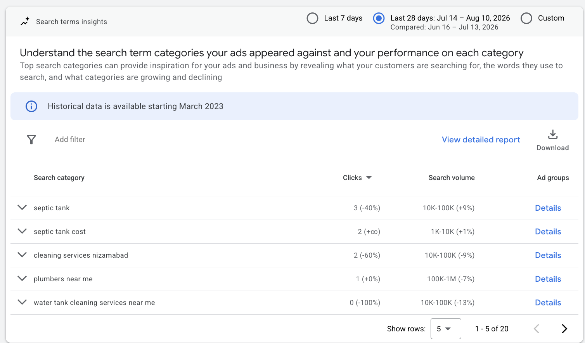
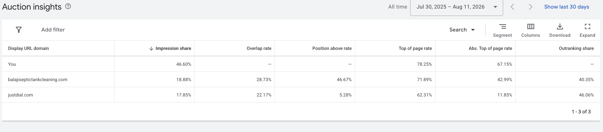

GOOGLE ADS · CASE STUDY
Managing a local Search campaign over approximately nine months, with a focus on high-intent keywords, local visibility, search-term refinement and efficient campaign management.

THE OVERVIEW
The business depended heavily on customers searching for its service at the moment they needed it.
The goal was to use Google Search Ads to place the business in front of high-intent local searches and continuously improve campaign performance based on real search behaviour.
THE CHALLENGE
For a location-based service business, showing ads to the right person matters more than simply generating traffic.
The campaign needed to capture users actively searching for the service while filtering irrelevant searches and avoiding unnecessary ad spend.
WHAT I WORKED ON
Worked with different keyword match types and refined targeting based on how people actually searched for the service.
Managed Maximize Clicks and Target Impression Share strategies depending on campaign visibility and performance objectives.
Reviewed search behaviour and refined negative keywords to reduce irrelevant traffic and improve targeting.
Focused campaign spend on customers searching within the business's relevant service area.

Keyword and search-term optimization during campaign management.
CAMPAIGN RESULTS

Campaign performance dashboard.
CAMPAIGN MANAGEMENT
Running the campaign also meant diagnosing issues whenever performance or visibility changed.
I worked through impression drops, keyword eligibility conflicts and ad visibility issues while continuously reviewing search terms, targeting, bidding and campaign settings.
This gave me hands-on experience not only launching campaigns, but maintaining and troubleshooting them over time.
WHAT I TOOK FROM THIS CAMPAIGN
Performance marketing isn't about setting up an ad once. It's about continuously understanding search intent, filtering irrelevant traffic, testing strategies and responding when campaign behaviour changes.
Managing this campaign over several months gave me practical experience working with live budget, real customers and real business outcomes.
← Back to Selected Work